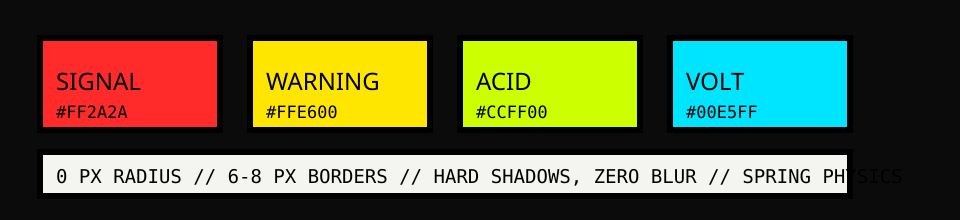

CLAUDE CODE SKILL // VERTICAL VIDEO
Raw footage plus one voiceover file goes in. A finished 1080×1920, 60 fps edit comes out — every sentence over the shot that shows what it says, motion graphics in a Tactical Neobrutalism system, and an audio master that is measured rather than guessed.

Cropping 16:9 into 9:16 upscales 1.78× and throws away 70% of the frame. This skill windows the source at 1040 px — a downscale — over a blurred copy of itself. Sharp picture, nothing important pushed outside the frame.
Word-level ASR drives everything: scene boundaries, subtitle blocks, speed counters, the giant question mark. Nothing drifts, because nothing is eyeballed.
A block that outruns its clip freezes on screen. A render that dies mid-way leaves the old file behind. Loudness drifts. All three are caught by scripts before you publish.
Giant question marks with spring physics · speed counters rolling to their number · tactical target boxes · HUD visor frames · EMP shock rings · drone clone swarms · hyperframe collages · impact frames · glitch slices · scrolling warning bands · broadcast chrome with running timecode.
| Step | Tool |
|---|---|
| Index footage, find the hero seconds | contact_sheets.py |
| Word-level transcript | transcribe.py (faster-whisper) |
| Subtitle blocks | build_subtitles.py |
| Cut hero clips | cut_clips.py |
| Compose scenes | Remotion template |
| Catch clip overruns | check_overruns.py |
| CC0 sound effects | fetch_sfx.py |
| Audio master and mux | mix_audio.py |
| Verify the export | verify_edit.py |
git clone https://github.com/EmirhanYAZICI/neobrutalist-reels-edit \ ~/.claude/skills/neobrutalist-reels-edit
Then ask Claude Code, in any language:
“Make a vertical Reels edit from this footage and voiceover.”
“Bu klasördeki videolarla ses kaydına göre dikey bir kurgu yap.”
Needs Node 18+, ffmpeg on PATH, Python 3.9+, and pip install faster-whisper.